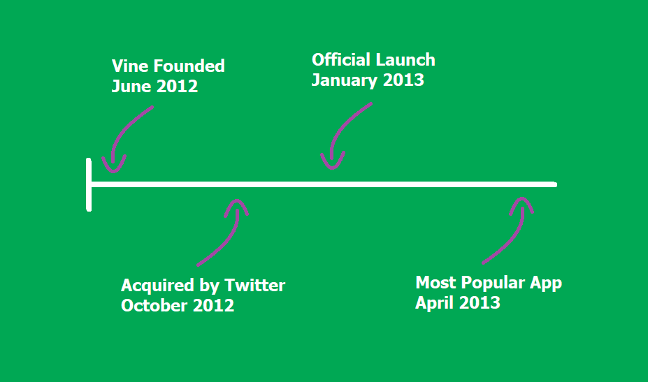
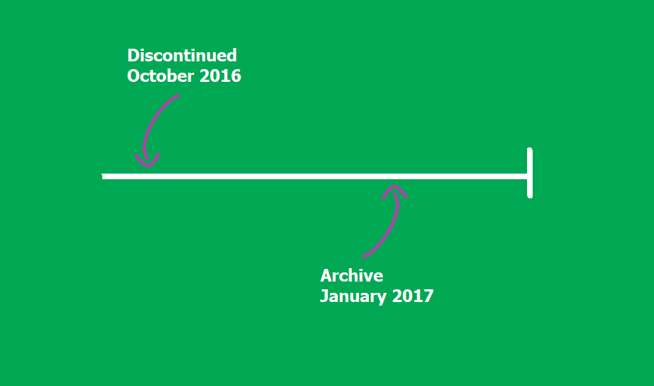

Vine
The 3 Years that Changed the Internet Forever
How Vine Started...
-

...And How it Ended
-

How It Worked
What it Looked Like
What it Could Do
Follow Like Share
DiscoverWhat it Became
How It Lives On
Instagram Felt Threatened
But it can never fill the void in our hearts that Vine left there
Vine Will be Remembered
rip

Vine's Legacy